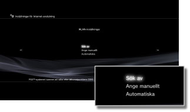
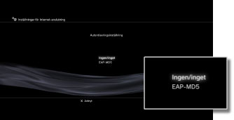
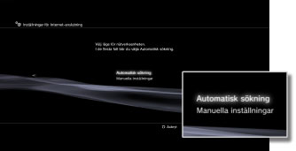
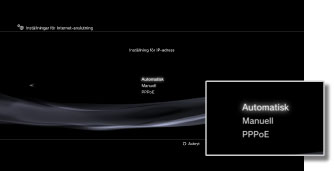
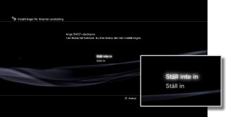
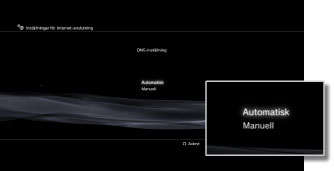
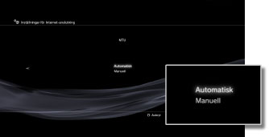
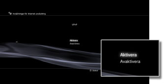

Inställningar > Nätverksinställningar > Inställningar för Internet-anslutning (avancerade inställningar)
Inställningar för Internet-anslutning (avancerade inställningar)
Om det inte går att ansluta till Internet med grundinställningarna måste du ändra de inställningar som behövs. Justera varje alternativ efter behov för den nätverksmiljö du använder.
1. |
Välj |
|---|---|
2. |
Välj [Inställningar för Internet-anslutning]. |
3. |
Välj [Anpassad]. |
 (Inställningar) >
(Inställningar) >  (Nätverksinställningar).
(Nätverksinställningar).Anslutningsmetod
Gör inställningarna för anslutning till Internet. Denna inställning finns endast tillgänglig på PS3™-system som är utrustade med trådlös LAN-funktion.

| Trådanslutning | Använd en Ethernetkabel vid trådanslutning |
|---|---|
| Trådlös | Gör en trådlös anslutning via ett trådlöst LAN |
WLAN-inställningar
Ange SSID för åkomstpunkten. Den här inställningen är bara tillgänglig på PS3™-system med trådlös LAN-funktion.

| Sök av | Sök efter en åtkomstpunkt i närheten. Välj den här inställningen om du inte känner till SSID för åtkomstpunkten. Systemet söker åtkomstpunkter i närheten och visar information om SSID och säkerhetsinställningar. |
|---|---|
| Ange manuellt | Du kan ange åtkomstpunkten manuellt genom att skriva in SSID via tangentbordet. Välj den här inställningen när du känner till SSID. |
| Automatiska | Du kan använda åtkomstpunktens automatiska inställningsfunktion. Den här inställningen är bara tillgänglig i länder där det säljs PS3™-system där den här funktionen kan användas. Välj den här inställningen när du använder en åtkomstpunkt med funktioner för automatisk konfigurering. Följ instruktionerna på skärmen. |
Säkerhetsinställning för WLAN
Ange en krypteringskod för en åtkomstpunkt. Den här inställningen är bara tillgänglig på PS3™-system med trådlös LAN-funktion.

| Ingen/inget | Ange ingen krypteringskod. |
|---|---|
| WEP | Ange en krypteringskod. Krypteringskoden kan anges på nästa skärm. Krypteringskoden visas som en rad asterisker. |
| WPA-PSK / WPA2-PSK |
Autentiseringsinställning
De här inställningarna är bara tillgängliga på PS3™-system som säljs i Korea och bara på PS3™-system med trådlös LAN-funktion.

| Ingen/inget | Ange ingen autentiseringsinformation. |
|---|---|
| EAP-MD5 | Ange autentiseringsinformation när du använder allmänna WLAN-tjänster. Ange ditt användar-ID och lösenord på nästa skärm. Mer information finns i anvisningarna som WLAN-leverantören tillhandahåller. |
Ethernet-läge
Ställ in överföringshastighet och funktionsmetod för Ethernet-data. Den vanliga inställningen är [Automatisk sökning].

| Automatisk sökning | Grundinställningarna görs automatiskt. |
|---|---|
| Manuella inställningar | Justera överföringshastighet och funktionsmetod för Ethernet-data manuellt. |
Inställning för IP-adress
Ange metod för att erhålla en IP-adress när du ansluter till Internet.

| Automatisk | Använd IP-adressen som tilldelats av DHCP-servern. Du kan ange DHCP-serverns värdnamn på nästa skärm. |
|---|---|
| Manuell | Ange IP-adress manuellt. Du kan ange värden för IP-adress, delnätmask, standardrouter och primär och sekundär DNS på nästa skärm. |
| PPPoE | Anslut till Internet med PPPoE. Du kan ange ditt användar-ID och lösenord på nästa skärm. |
DHCP
Ställ in DHCP-värdnamn. Välj normalt sett [Ställ inte in].

| Ställ inte in | Ställ inte in DHCP-värdnamn. |
|---|---|
| Ställ in | Ställ in DHCP-värdnamn. |
DNS-inställning
Ställ in DNS-servern.

| Automatisk | DNS-serveradressen anges automatiskt. |
|---|---|
| Manuell | DNS-serveradressen anges manuellt. |
MTU
Konfigurera MTU-värdet som används vid dataöverföring. Den vanliga inställningen är [Automatisk].

| Automatisk | Ange MTU-värdet automatiskt. |
|---|---|
| Manuell | Ange maxstorlek för datapaket (i bytes) som kan skickas i en överföring. |
Proxyserver
Ange vilken proxyserver som ska användas.
| Använd inte | Använd inte en proxyserver. |
|---|---|
| Använd | Använd en proxyserver. Du kan ange proxyserverns adress och portnummer på nästa skärm. |
UPnP
Du kan aktivera eller avaktivera UPnP-inställningarna (Universal Plug & Play).

| Aktivera | Aktiverar UPnP. |
|---|---|
| Avaktivera | Avaktiverar UPnP. |
Tips!
Om du har ställt funktionen till [Avaktivera] kommer kommunikationen med andra personer att begränsas när du använder röst-/videochattfunktionen eller kommunikationsfunktioner i spel.